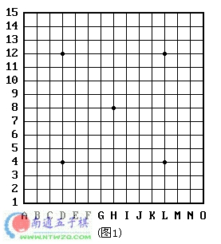
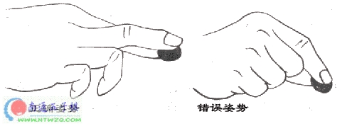
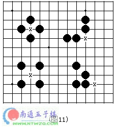
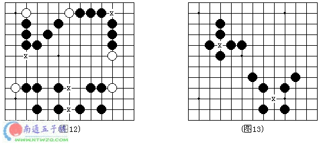
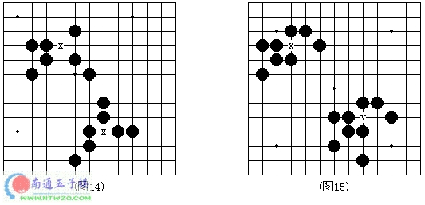
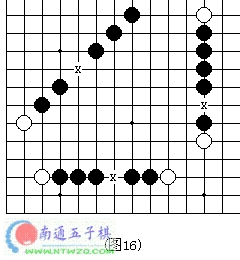
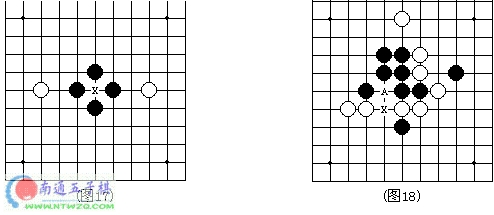

连珠入门系列讲座
#1 连珠入门系列讲座 作者：莲子 发表时间：2006-1-27 12:51:50
转载自雪飞五子茶馆http://www.5zq.net/jiaoshi.htm
第一讲：什么是连珠
这一讲是要了解连珠是什么东东。
那么连珠是什么呢？其实，连珠就是五子棋，说的准确点，是改良后的五子棋。现代五子棋的日文称之为“連珠”，英译为“Renju”。
五子棋起源于中国，可能早在“尧造围棋”之前，民间就已有五子棋游戏。在上古的神话传说中有“女娲造人，伏羲做棋”一说，《增山海经》中记载：“休舆之山有石焉，名曰帝台之棋，五色而文状鹑卵。”《辞海》中亦言：“五子棋中棋类游戏，棋具与围棋相同，两人对局，轮流下子，先将五子连成一行者为胜。”可见，五子棋颇有渊源。
再说说"连珠"的起源，连珠源于日本，是日本棋手对五子棋改良的结果。据日本史料文献介绍，中国古代的五子棋先由中国传到高丽（朝鲜），然后于公元1688年至1704年日本的元禄时代再从高丽传到日本，最初在皇宫和贵族大家庭中流行，到元禄末期，开始在民间盛行。1899年，经过公开征名，“连珠”这一名称才被正式确定下来。
从这之后，连珠这一活动经过不断改良，主要是规则的变化，例如1899年规定：禁止黑白双方走“双三”；1903年规定：只禁止黑方走“双三”，1912年规定：黑方被被迫走"双三"亦算输；1916年规定：黑方不许走“长连”；1918年规定：黑方也不许走“四、三、三”；1931年规定：黑方不许走“双四”，并规定将19×19的围棋盘改为15×15的五子棋专用棋盘。通过这一系列的规则变化最终使五子棋成为今天的职业连珠五子棋，同时也成为一种国际棋。
目前，职业连珠在国际发展迅速，1988年，国际连珠联盟(RIF) 在瑞典创立，成员国包括日本、俄罗斯、瑞典、亚美尼亚、阿塞拜疆、爱沙尼亚、法国、拉脱维亚、白俄罗斯等9个国家，总部设在瑞典的斯德哥尔摩。现在全世界已有数十个国家和地区成为国际连珠联盟的正式会员，我国于1996年正式加入。
就各国五子棋的整体水平而言，目前欧洲实力最强，特别是俄罗斯和爱沙尼亚，而日本是传统的连珠强国。我国的连珠水平则迅猛增长，特别是连珠研究与网络连珠水平天下无敌，但更能确证实力的要到正式的大赛中加以验证。
了解了连珠的来龙去脉，大家是不是要问我们为什么要下五子棋呢？五子棋能在世界范围内广泛流传，正说明了其魅力所在。简单的说，五子棋容易上手，老少皆宜，而且趣味横生，引人入胜；深入的说，五子棋不仅能增强思维能力，提高智力，而且富含哲理，有助于修身养性。
呵呵，说了这么多，相必大家对连珠有一些了解了吧，那么现在，我们一起学习连珠吧，下讲再见。
#2 第二讲：连珠用具 作者：莲子 发表时间：2006-1-27 12:55:24
这一讲是要了解连珠用具，即正式连珠比赛中用到的棋具，包括棋盘、棋子和棋钟。

棋盘如图1所示，连珠棋盘形状近于正方形，15×15大小，共有225个交叉点，邻近两个交叉点的距离纵线约为2.5厘米，横线约为2.4厘米。
棋盘正中一点为“天元”。棋盘两端的横线称端线。棋盘左右最外边的两条纵线称边线。从两条端线和两条边线向正中发展而纵横交叉在第四条线形成的四个点称为“星”。天元和星应在棋盘上用直径约为0.5厘米的实心小圆点标出。
以持黑方为准，棋盘上的纵轴线从左到右用英文字母A~O标记。横行线从近到远用阿拉伯数字1~15标记。纵横轴上的横纵线交叉点分别用横纵线标记的名称合写成。如“天元”H8，四个“星”分别为D4、D12、L12、L4等。
棋子
棋子分黑、白两色，形状为扁圆形，有一面凸起，厚度不超过0.8厘米，直径为2.0～2.3厘米；棋子数量为黑色棋子113枚，白色棋子112枚。
知道正确的拿子方式吗？正确的拿子方法应该跟围棋相同：用食指和中指的指尖夹住棋子，准确地将棋子轻轻放在棋盘的交叉点上，有些人习惯于用拇指和食指夹住棋子，这种姿势很不正确，不能登大雅之堂。请看下图；

棋钟
棋钟应是具有两个钟面的专用计时钟，能分别准确地累计对局双方的行棋时间。
棋钟可分机械钟和电子钟。机械钟应带有倒旗装置，钟上所谓的旗应固定于钟面数字“12”上，旗落时要求清晰可见，以增强判断“超时”的准确性。时钟应能准确地指明钟点；电子钟应能用数字准确地显示时间。
棋钟要求避免刺眼，运行时声响应很低弱。
OK，这一讲就到这里吧，下讲再见。
#3 第三讲：连珠基本定义与术语 作者：莲子 发表时间：2006-1-27 12:57:14
#4 第四讲：规则与特例 作者：莲子 发表时间：2006-1-27 12:58:04
这一讲主要学习职业连珠规则和特例，包括记谱的方法。简明职业连珠比赛规则
1、执黑先行，白棋后行，第一颗子必须落在天元上，依次轮流落子。
2、最先在棋盘横向、竖向、斜向形成连续的相同色五个棋子的一方为胜。
3、黑棋禁手判负、白棋无禁手。黑棋禁手包括“三、三” “四、四” “长连”。黑方只能“四、三”胜。
4、如分不出胜负，则定为平局。
5、对局中拔子、中途退场均判为负。
6、五连与禁手同时形成，先五为胜。
7、黑方禁手形成时，白方应立即指出。若白方发现而续应子，不能判黑方负。
基本规定
1、对局开始前，双方猜子，大数减小数，单数交换，偶数不换。
2、白棋第一手应在天元为界自己一侧布子，之后双方可任意行子。
3、对局中双方遵守“职业连珠五子棋规则”，如出现争议，应由裁判判定。
4、对局中掉子(棋子掉落在棋盘上)的一方判负。如遇推子或蹭子，以盘面第一落点为准。用手将棋子扶正不算违规。
5、对局中应礼貌行棋，防止不正常声音、动作影响对方思棋。
6、比赛结束后，双方应将各自棋子放回原处。
7、对局中如黑方出现禁手，白方应立即指出禁手点，黑方即负。如白方在黑方出现禁手后，又落一步白子，黑棋禁手则不成立了。
8、比赛对局时间，双方分别为15分钟、1小时、2小时、l5小时四个等级标准，超时判负。
特例
职业连珠五子棋虽然对黑棋采取了种限制，但是黑棋先行的优势依然很大。因此，在高段位的职比赛中，又出现了三种特殊的规定。
①“指定打法”：是指比赛双方按照约定好的开局进行，由白棋先行。
②“三手可交换”：是指黑棋下第2手棋(盘面第3着棋之后，白方在应白2之前，如感觉黑方棋形不利于己方，可出交换，即执白棋一方变为执黑棋一方(此方法不适用指定局打法，而用于随意开局)。
③“五手两打法”：是指黑棋在下盘面上关键的第5手时，必须下两步棋，让白方在这两步棋中任选一步，然后再续下。
连珠记谱法
正规的记谱方法可用“棋稿纸”，即专供五子棋爱好者记录对局或着法的稿纸。印有正规专用棋盘图形，记录时只要按相应位置在纸上标明行棋的先后，就可反映对局的进行过程。
非正规方法可用格子纸记录，即用单数1、3、5……记录黑方的走法，用双数2、4、6……记录白方的走法，同样可反映对局的进行过程。
现通用盲棋法记谱：①设定棋盘的纵轴线用阿拉伯数字1~15标记，横线用英文字母A~O标记；②规定持黑方坐北朝南，其左手起点为A1(东北角点)，左上方为A15(东南角点)，右上方为O15(西南角点)，右下方点为O1(西北角点)。中央天元点为H8，小星点从左开始顺时针方向数依次为D4、D12、L12、L4。记谱时按黑先白后依次记录即可。此法有利于下盲棋，而且不用格子棋稿纸亦可记录对局过程。
OK，这一讲就到这里吧，下讲再见。
#5 第五讲：禁手详解(1) 作者：莲子 发表时间：2006-1-27 13:01:25
这一讲学习禁手，通过本讲我们会明白禁手的真正含义。不公平处见公平
大家知道，白棋是没有禁手的，而黑棋却有禁手，那么为什么只给黑方设禁手呢？也许有人认为这样的规则是不公平的，为什么只是黑方有禁手，而且有三三、四四、四三三、四四三、长连等五种之多呢? 不懂连珠的人和刚开始学连珠的人往往会认为这样的规则是不平的。
然而，先落子的是黑方，这一点很关键。所以，原则上黑方可先连成五，如果紧跟着白方也连成五也不算数，还是算黑胜，从这点看，不也是不公平吗?
其实，对黑方的行棋加以限制，从对局的实际棋力的发挥来看，对双方是比较公平的。正因为黑方先下,先连五为胜，故如不对黑方加以限制，才是不公平的。
请好好理解“不公平处见公平”这一奇怪的逻辑。但是，给黑方设禁手，仅仅是为了使黑白双方取得力量上的均衡吗?制定连珠规则的初期，也许目的是这样的。但随着连珠研究的发展，目前，已不仅仅是为了力量的均衡了。“四三取胜”、“不叫对方下出四三”的技术和”设置禁手”、“躲开禁手”的战术是两种截然不同的思考方法。要同时掌握这两种不同的思考方法，才更能体会出连珠的魅力。
禁手的种类
黑棋禁手包括三三、四四、四三三、四四三、长连5种。
三三禁手
黑方走一着在无子交叉点上同时形成了二个或二个以上活三。(见图11，X点均为三三禁手)

四四禁手
黑方走一着在无子交叉点上同时形成了二个或二个以上的四。(见图12、图13，X点均为四四禁手)

四三三禁手
图14中，黑棋在X点落子后，将会形成一个四和两个活三，X点就是四三三禁手点。
四四三禁手(包括四四四禁手)
图15中，黑棋在X点落子后，将会形成两个四和一个活三，X点就是四四三禁手点；黑棋在Y点落子后，将会形成三个四，Y点就是四四四禁手点。

长连禁手
长连指在一条直线或斜线上，下成连续5个以上的棋形，图16就是几种长连的图例，只要黑棋走出连续5个以上就是禁手。

禁手的判断
禁手的定义：当黑棋走一步棋时，同时直接形成三个或者三个以上的先手，且没有形成五连，这个点就是禁手；如果是两个先手，只要不是三和四组合，其他(包括三三、四四、四三三、四四三)都是禁手；长连也是禁手。
这里要理解先手的含义，这里的先手是指做四和活三，要注意的是，并非形成了四或者活三就能成为先手，必须是形成的四或活三有发展成为连五的可能时才可称为先手。
如图17，因为横线是假活三，落子X点后没有一定成连五的可能，因此X点不属于禁手点。如图18，X这一点有可能被看作是三三，但是，由于竖跳三的下一手在A点将成四四禁手而不能走，这种竖三属于死三，所以X点不算三三。

#6 Re:连珠入门系列讲座 作者：vocals 发表时间：2006-9-1 12:14:39
谢谢谢谢!#7 Re:连珠入门系列讲座 作者：ベ☆ve寶々 发表时间：2006-9-3 6:37:46
呵呵,,,真的是很好.. 受益了~``
#8 Re:连珠入门系列讲座 作者：酒鬼 发表时间：2006-9-5 19:14:44
谢谢，谢谢，学……
#9 Re:连珠入门系列讲座 作者：ms2_pd 发表时间：2006-9-12 10:28:46
好象没有结束呀！#10 Re:连珠入门系列讲座 作者：sffgw 发表时间：2006-9-14 15:48:35
不错的教程，这会就清楚什么禁手了#11 Re:连珠入门系列讲座 作者：风行奇迹 发表时间：2006-11-1 21:11:01
意尤未尽啊！#12 Re:连珠入门系列讲座 作者：hhebb 发表时间：2006-11-4 23:09:33
嗯，懂了
#13 Re:连珠入门系列讲座 作者：五子散人 发表时间：2006-11-5 9:45:57
学习体会中，谢谢。#14 Re:连珠入门系列讲座 作者：菜鸟飞飞 发表时间：2006-11-6 20:02:25
图18中的X点可以下，只要不下A点就可以，对不对？#15 Re:连珠入门系列讲座 作者：悉奴卡罗 发表时间：2006-11-25 17:42:37
原来五子棋都这么深奥!晕!!!!!!!!!!#16 Re:连珠入门系列讲座 作者：『齐鲁』林夕 发表时间：2006-11-27 21:05:34
下篇在哪儿
#17 Re:连珠入门系列讲座 作者：轻敲漫语 发表时间：2006-11-29 18:37:47
等待继续听讲
#18 Re:连珠入门系列讲座 作者：我是正牌寒星 发表时间：2006-11-30 12:28:23
期待后面更精彩的内容：）#19 Re:连珠入门系列讲座 作者：猪 发表时间：2006-12-4 19:56:13
辛苦了.~
#20 Re:连珠入门系列讲座 作者：薛瑞麟 发表时间：2006-12-30 18:23:19
我自己是初级
#21 Re:连珠入门系列讲座 作者：伊888 发表时间：2007-1-1 20:32:14
谢谢#22 Re:连珠入门系列讲座 作者：星火燎原 发表时间：2007-1-2 0:59:07
仔细学学有好处的~~谢谢了
#23 Re:连珠入门系列讲座 作者：和棋 发表时间：2007-2-12 11:34:18
讲的好#24 Re:连珠入门系列讲座 作者：凯枫 发表时间：2007-2-20 11:21:13
真是太好了!!!!!!!!!!
谢谢!!!!!!!!!!
#25 Re:连珠入门系列讲座 作者：花木兰 发表时间：2007-2-25 12:24:46
这个好呀，认真学习下
#26 Re:连珠入门系列讲座 作者：大鲨鱼 发表时间：2007-2-26 20:49:09
看了以后知道一点了，原来不太清楚#27 Re:连珠入门系列讲座 作者：lw1217 发表时间：2007-3-3 19:41:01
还有第6讲吗?#28 Re:连珠入门系列讲座 作者：百合香舍 发表时间：2007-7-20 17:59:40
很详细的文字解说，对于入门的新丁来说，有个很清楚的了解。#29 Re:连珠入门系列讲座 作者：小小圣隐者 发表时间：2007-7-21 16:46:15
小弟受益多多!谢谢楼主!#30 Re:连珠入门系列讲座 作者：qaz 发表时间：2007-7-28 9:13:05
受益多多!谢谢楼主!#31 Re:连珠入门系列讲座 作者：红皮 发表时间：2007-7-30 16:53:23
学习中，谢谢！#32 Re:连珠入门系列讲座 作者：5子~学遥 发表时间：2007-8-2 22:41:31
太好了!关于禁手终于认识了一些!^_^#33 Re:连珠入门系列讲座 作者：效果我 发表时间：2007-8-3 16:09:50
号阿，谢谢了#34 Re:连珠入门系列讲座 作者：风之铃音 发表时间：2007-8-6 20:51:54
谢谢谢谢#35 Re:连珠入门系列讲座 作者：甲方乙方 发表时间：2007-8-7 13:37:02
好，支持，对于新手太有用了。谢谢楼主。#36 Re:连珠入门系列讲座 作者：我想学棋 发表时间：2008-11-7 17:04:49
谢谢老师,学习中
#37 Re:连珠入门系列讲座 作者：牧羊犬 发表时间：2008-11-7 19:46:51
谢谢老师！
我刚开始学，我会努力的……
#38 Re:连珠入门系列讲座 作者：找不着北 发表时间：2008-11-8 10:08:53
谢谢啊 老好了#39 Re:连珠入门系列讲座 作者：四王爷 发表时间：2008-11-29 12:55:47
禁手好难！！！！
学习..................
#40 Re:连珠入门系列讲座 作者：来客沙丝 发表时间：2009-3-12 20:55:39
五子棋的规则仔细看来真是复杂。越学越不会似的。比如乒乓球，篮球，虽然也有规则，但是全世界的人都可以看比赛，知道谁好谁差，可以一起欢呼，一起摇头。可是五子棋却只有懂的人才能全情投入，不知道这些复杂规则的人只有敬而远之了。我想，这可能是这个小巧玲珑的棋类运动无法普及的最大根源了。真是遗憾啊。
［ 有志青年 于 2009-3-12 21:27:24 时奖励此帖[金币加 20 威望加1］
#41 Re:连珠入门系列讲座 作者：斯文扫地 发表时间：2009-3-13 13:42:35
讲的很详细啊，适合我们新手的学习谢谢
#42 Re:连珠入门系列讲座 作者：月牙仙侣 发表时间：2011-2-24 17:49:01